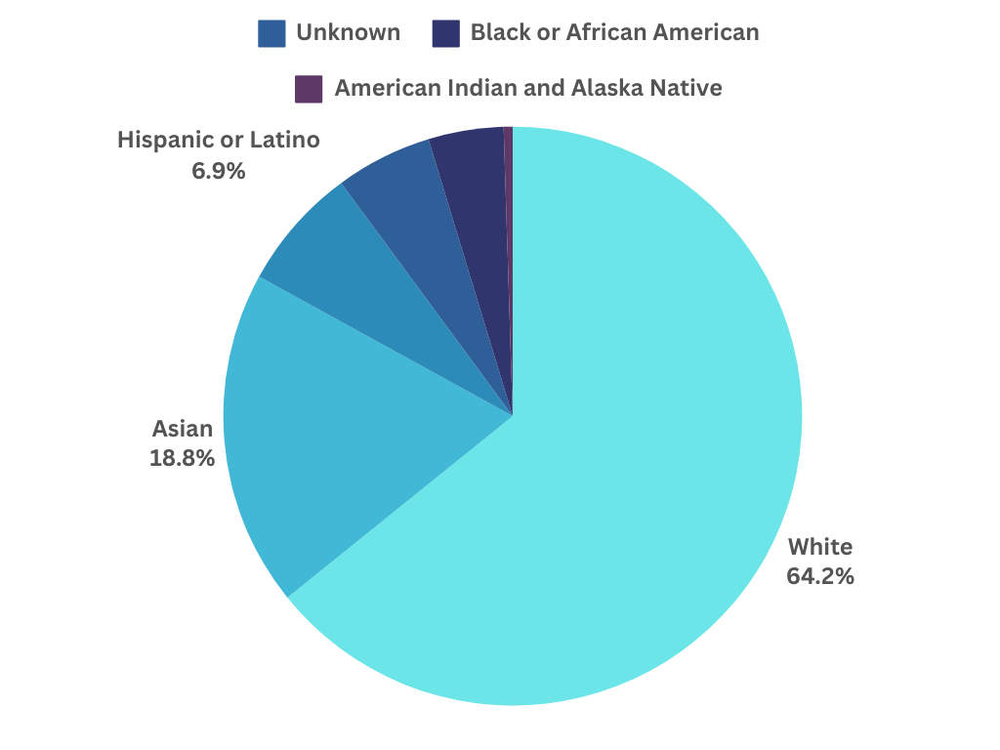
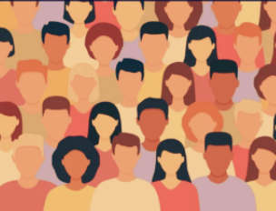
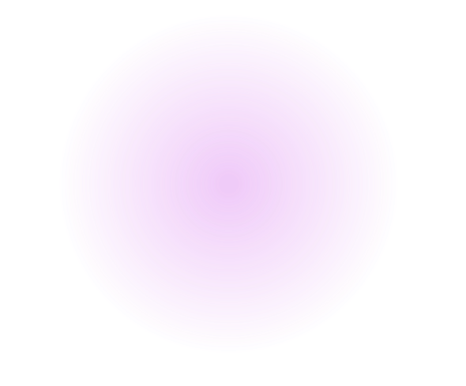

Why Diversity Matters in Tech
Article Preview:
- Reduced Bias in Technology
- Broader Range of Skills
- Social Responsibility
- Positive Organizational Culture
BY
MURRAY NEWLANDS
LEARN MORE
SIGN PETITION
RECENT POSTS FEED
Educational Resources
Explore articles and videos that delve
into the vital role of diversity in computer science.
Whether you're a student, tech enthusiast,
or professional, find insights to inspire and educate.
CLICK TO EXPLORE
AND ENRICH YOUR
UNDERSTANDING!
SUPPORTING DIVERSITY
& INCLUSION IN CS
Discover the impact of diversity in AI with Eva Prakash's TED Talk.
Uncover how diversity shapes technology, addresses biases, and empowers underrepresented voices.
Explore the urgent need for inclusivity in AI development for a more equitable and innovative future.
Community Forum
My journey as a black women in CS wasn’t easy.
I struggled a lot with imposter syndrome and to
add onto that I was usually the black girl within
my classes. But luckily I was able to find people
that look like me and form lifelong bonds which
help a lot in improving my imposter syndrome.
I also came to find that I wasn’t the only one
struggling which made it comforting to know I
wasn’t alone in my struggles. Overall though I
believe CS still has a long way to go in making
the major feel safe for those who are a minority
within it. 🧕🏽 Siraju, Northeastern ' 25
Navigating computer science as a first-generation
person from a third world country, I’ve encountered
the weight of imposter syndrome. I constantly find
myself questioning my abilities in the field, especially
as an Asian female student who’s pursuing higher
education in a foreign country. The journey often
feels like an uphill battle as I face the feeling of being
behind others and lack of representation. However,
I learned to embrace these challenges and make
most of the problems I’m faced with to grow and thrive
in computer science. Overall, while CS and other STEM
fields are challenging for minority groups, the journey
would assist us to persevere and learn to thrive.
👧🏻 Ponita, Umass Lowell ' 26
My introduction into CS was difficult to say the least.
I’ve never taken a cs course before and as assignments
began to pile up, I felt hopeless and unintelligent. To add
fuel to the fire, I didn’t see anyone in my classes that looked
like me which created feelings of inadequacy and made me
question my presence in these classes. By the third week
of college, I was about to switch my major. Luckily, I found
others who were in the same spot as me and weren’t afraid
to discuss their ups and downs. They motivated me to reach
out for help and not suffer in silence, which pushed me to
continue this major and inspire girls who look like me to power
through feelings of imposter syndrome. 🧕🏾 Maha, Northeastern ' 25